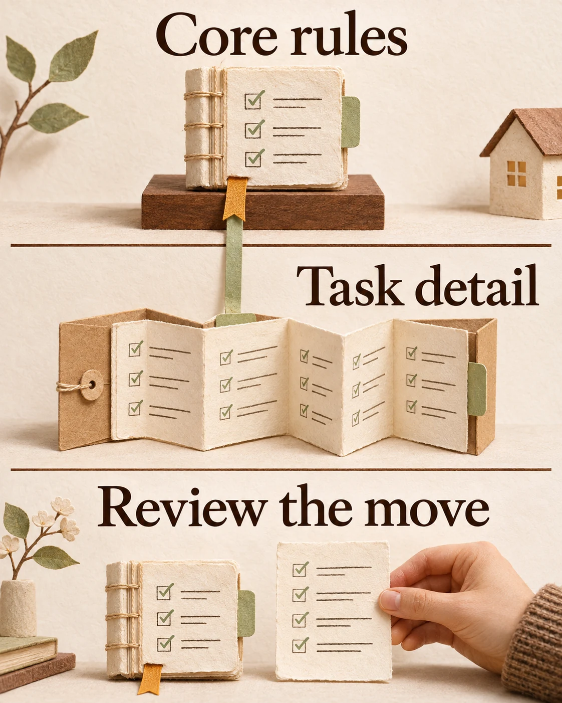

Agent engineering
Your AI agent’s instructions grew while you weren’t looking
An instruction audit found ignored scope metadata, stale guidance and safeguards lost during trimming. Five checks for reviewing what your agent reads.
The takeaway
Measure what loads, verify scope and stale facts, and preserve obligations when trimming instructions.
Instructions accumulate between tasks
While working with AI coding agents on an independent project, I approved a plan to reduce the instructions loaded into our sessions. The audit had found something more specific than long files: rules intended for particular work were loading everywhere because their scope was written in a format the loader did not recognise.
The files had grown through useful additions: a correction after a mistake, a procedure for the next task, a status note left for a later session. Taken together, they mixed current obligations with history and stale facts. I wanted a check that would stop the accumulation happening again.
The repair also introduced a problem. An independent review found safeguards missing from the shortened instructions, along with wording that contradicted another rule. Both needed correcting before the changes were committed. That review shaped the advice below: measure what loads, but check what survives the edit.
Measure the baseline before changing it
We examined fresh-session logs and listed the files loaded on every request, with their byte sizes. That separated the size of our instruction files from the larger amount of context already present when work began.
For your own check, start a fresh session and inspect the context breakdown before giving the agent a task, if your tool exposes one. Record the tool version, enabled integrations and measurement point. Then inventory the instructions that load unconditionally. System instructions and tool information can also occupy context; the total is not a measurement of your prose alone.
Repeat under the same conditions after an edit. File bytes are useful for tracking growth, but they are not an exact token count. If the baseline is already small and the instructions are current, this may reveal little worth changing.
Test whether scoped rules stay scoped
In our audit, some rules described their intended scope in ordinary prose instead of the metadata the tool parsed. They were treated as unscoped. Correcting that mattered more than tightening their sentences.
Check your tool's current documentation before changing the format. In a disposable session, read a harmless file outside the intended scope and inspect which rules loaded. Use a separate fresh session to check a matching file. A rule left in context by an earlier task can confuse the comparison. Treat this as a proposed diagnostic, rather than a test I am claiming we performed in this form.
We kept rules triggered by events in the core instructions. A requirement that applies before a particular action still needs to be available when that action involves no matching project file.
Re-test claims that a capability is unavailable
A separate incident exposed guidance saying a capability was unavailable. A live check showed it worked. We also corrected stale counts and names that were still being supplied as current information.
Search for statements such as 'unsupported', 'broken' or 'disabled'. Separate factual limitations from deliberate permission boundaries. Verify a capability with a harmless, authorised check; an instruction forbidding an action is not permission to try it.
For a count you keep, record how to reproduce it and when it was checked. An incorrect claim that something works tends to produce a visible failure. A claim that something cannot work may simply prevent anyone trying it again.
Move detail without losing obligations
We separated always-needed instructions from longer detail, moving text into separate files and leaving pointers behind. Moving a file only helps if the tool does not automatically load the whole thing through that pointer; check its loading behaviour.
The independent review then caught the lost safeguards and conflicting guidance. A smaller file still needed a behavioural repair.
Before trimming, list the obligations expressed by words such as 'must', 'always' and 'never'. Afterwards, trace each one to its new location and check when it becomes available. Search the remaining files for contradictions. Ask a reviewer who did not make the edit to check that mapping. Keyword searches are a starting point: a safeguard can be expressed without any of those words.

Enforce the budget and inspect the pressure
Advice to keep the files concise had not held. We added an automated byte-budget check that could fail before a commit, rather than relying on another reminder in the instructions.
The main file later returned to its cap. That is a reason to inspect what is competing for space. Raising a limit may be justified, but first check whether old status notes or occasional procedures are displacing current rules.
We also moved session state to disk and started fresh sessions at task boundaries. That addresses accumulated conversation separately from persistent instructions. A useful handover needs the current decision, unfinished work and checks still required; it should not become another unbounded history file.
Smaller context leaves other questions open
The session record reports smaller fixed context per request alongside higher total usage during a busier period with more requests. It does not establish a cost saving. Output quality was not measured, and the planned quality check was not recorded as completed.
Start with one rule you believe is scoped. Check when it loads, make one change, then repeat the observation and review the obligations. If the rule was already loading correctly, or the relevant material still loads through another route, that would change the diagnosis. Keep the resulting evidence alongside the instructions so the next edit has something concrete to compare.